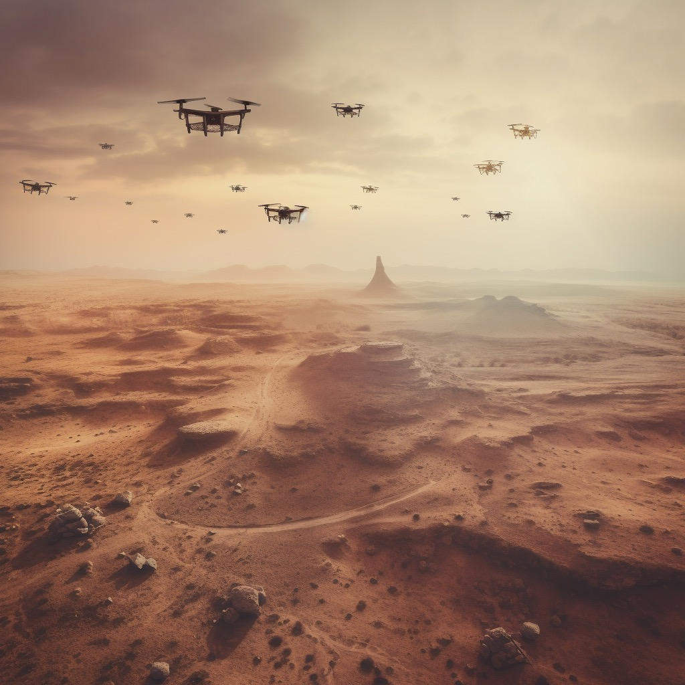
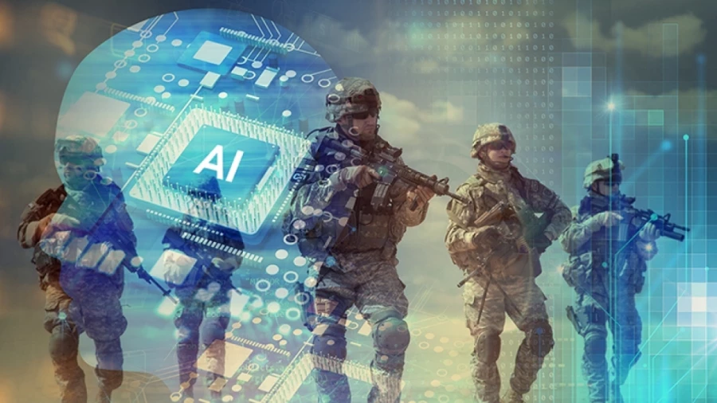

Tecnologías y Sistemas Utilizados en Defensa Nacional
Introducción
La innovación tecnológica ha sido un impulsor clave en el desarrollo y evolución de la defensa nacional a lo largo de la historia. En un mundo cada vez más interconectado y complejo, las naciones buscan constantemente aprovechar los avances tecnológicos para fortalecer su seguridad y protección. La innovación en este ámbito abarca desde el desarrollo de sistemas de armamento de vanguardia hasta el uso de tecnologías disruptivas como la inteligencia artificial y la ciberseguridad.
A lo largo de la historia, la tecnología ha desempeñado un papel fundamental en la evolución de la defensa nacional. Desde los primeros armamentos hasta las sofisticadas capacidades actuales, los avances tecnológicos han impulsado cambios significativos en la forma en que las naciones se protegen y combaten las amenazas.
Marcin Frąckiewicz: El impacto de los drones del ejército en la defensa nacional y la seguridad nacional
Drones y vehículos aéreos no tripulados (UAV)

Estos sistemas permiten realizar operaciones de vigilancia, reconocimiento y ataque sin poner en riesgo la vida de los pilotos. Los drones se utilizan para obtener información en tiempo real sobre el campo de batalla y para llevar a cabo misiones específicas de forma precisa y eficiente.
Los drones y UAV tienen una amplia gama de aplicaciones en el campo de la defensa nacional. Algunas de las aplicaciones más comunes incluyen:
- Vigilancia y reconocimiento
- Operaciones de combate
- Apoyo logístico
- Búsqueda y rescate
- Reconocimiento de fronteras
Steeven Gustavo Romero Mier: Inteligencia artificial como herramienta de estrategia y seguridad para defensa de los Estados
Sistemas de inteligencia artificial (IA)

Los sistemas de inteligencia artificial (IA) en defensa nacional han ganado una importancia significativa en los últimos años debido a su capacidad para analizar grandes cantidades de datos, tomar decisiones rápidas y precisas, y mejorar la eficiencia operativa. La IA ha transformado la forma en que las fuerzas armadas abordan los desafíos militares y ha abierto nuevas posibilidades en diversos aspectos de la defensa. A continuación, te proporciono más información sobre los sistemas de IA en defensa:
- Análisis de datos y reconocimiento de patrones
- Toma de decisiones automatizada
- Sistemas autónomos y robots militares
- Optimización de logística y mantenimiento
- Vigilancia y reconocimiento automático
Realidad Virtual y Realidad Aumentada en el Sector de defensa
Realidad aumentada y realidad virtual

La realidad aumentada (RA) y la realidad virtual (RV) son tecnologías que han revolucionado la forma en que interactuamos con el mundo digital y han encontrado diversas aplicaciones en distintos campos, incluida la defensa nacional.
En la defensa nacional, la RA se ha utilizado en diversas áreas, como entrenamiento, mantenimiento y operaciones tácticas. Por ejemplo, los soldados pueden usar gafas de RA para ver información contextual y datos críticos sobre los objetivos o el campo de batalla mientras mantienen la visión de su entorno físico.
En defensa, la RV se ha utilizado para entrenamiento en entornos simulados de combate, vuelo o navegación. También se ha aplicado en el diseño y la planificación de operaciones, permitiendo a los comandantes y planificadores visualizar y analizar escenarios tácticos antes de llevar a cabo misiones en el mundo real.
La ciberseguridad en el Perú: Reto para la transformación digital
La Educación Digital en Huancavelica
La ciberseguridad es un aspecto crítico para la defensa nacional en la era digital. Consiste en proteger los si stemas de información y las infraestructuras críticas de ataques cibernéticos, intrusiones y el robo o daño de información sensible. En el contexto militar, la ciberseguridad se vuelve aún más crucial, ya que un ataque cibernético exitoso puede comprometer la seguridad nacional, las operaciones militares y la integridad de la información.
A continuación, se presenta más información sobre la ciberseguridad enfocada a la defensa nacional:
- Amenazas cibernéticas
- Ciberespionaje y cibersabotaje
- Protección de información clasificada
- Sistemas autónomos y ciberseguridad
- Respuesta a incidentes cibernéticos